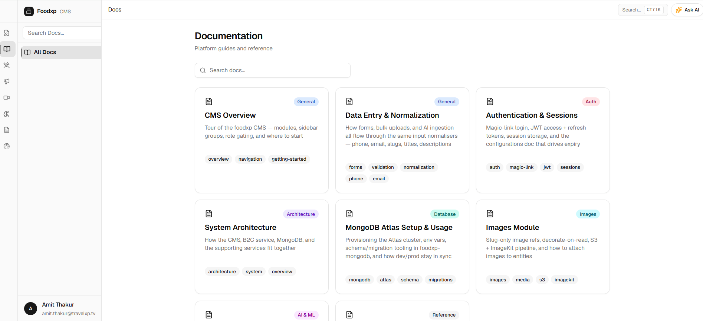

The problem
Recipes are dense, nested documents — ingredients, measurements, techniques, timings — and every value maps to a strict database taxonomy.
Publishing one meant hand-reading a source document and pasting values into a dozen-plus CMS fields: 15–20 minutes per recipe, and a hard ceiling on how fast content could scale.
How we knew we solved it
The bar: publish far faster without ever compromising master data. Three metrics tracked it.
- Time-to-Publish per Recipe (Primary KPI): Cut the 15–20 minute manual pass to automated parsing plus a review.
- AI Field Acceptance Rate (target >80%): Share of AI-filled fields editors approve without rewriting.
- Storage Cost per GB: Hold media spend flat as high-resolution imagery scaled.
What I did
Workflow Mapping
I shadowed editors end to end. The cost wasn't typing — it was context-switching between source documents and rigid database forms.
Flow & UI Design
I wireframed the Split-Compose layout: source files on the left, the target schema on the right, zero tab-switching.
System & Data Architecture
I defined the data model, the module boundaries (catalog, media, subscriptions), and the validation rules both the AI and editors run against.
Human-in-the-Loop Governance
I designed the approval gate: the AI parses, but a person is the last check before anything reaches production.
Cost Scoping with Engineering
I partnered with engineering to land a Cloudflare R2 storage layer early, before high-volume media scaled.
What I shipped
1. AI-Assisted Split-Compose
The Workspace: a two-column interface — a bulk dropzone (files up to 25MB) on the left, empty structured fields on the right, so editors see the target schema before they start.

The Guardrail: when the AI maps text to complex taxonomies with low confidence (say, matching a step to "Grinding" or "Kneading"), the UI flags a yellow "Needs Review" for a human.

The Output: parsing populates values like preparation and cook times, and green "AI" badges mark exactly which fields the model handled.

The honest part: adding a recipe is still deliberate — every field clears taxonomy validation, confidence scoring, and a human approval gate. That friction isn't a bug; it's what keeps master data clean.
2. Operational Governance
Database Copilot: non-technical staff ask in plain English — "How many active recipes?" — and get an instant answer (190), with no developer-run exports.

Content Dashboard: a macro health view with a "Publish Ready %" dial and a queue of drafts needing attention, such as missing hero images.

3. The Media Module
One Governed Library: every cuisine, recipe, and reel pulls from a single Images module — tags, attachment target, source, and an active/draft status, managed in one place instead of scattered uploads.

4. Subscriptions & IAP
Monetization as a First-Class Module: because the consumer app runs on Premium plans, subscriptions are governed like any other master data — look up a customer by name, email, or phone, filter by plan, platform, and status, and act from one screen.

5. System Architecture & Documentation
Specs Engineers Can Build From: documentation mapping the data-normalization lifecycle, authentication, and the R2 media pipeline, so engineering executed without guesswork.

Impact
- Manual entry collapsed from 15–20 minutes to automated parsing plus review — the copy-paste drag is gone; validation stays by design.
- 100% master-data integrity across nested schemas — no broken filters or null results on the B2C app.
- Media spend held flat via an optimized storage pipeline from day one.
- The system extends to media and subscriptions — content, assets, and monetization on one governed CMS.